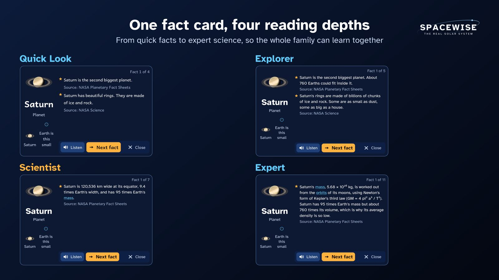

SpaceWise in the classroom: a guide for teachers
Who can use the headset
- Pupils aged 10 and over only. Meta Quest is for ages 10 and up, and pupils aged 10 to 12 need a parent-managed Meta account. Follow Meta's current rules for education use and your school's safeguarding policy.
- In Year 5, only pupils who have turned 10 may wear the headset. Many Year 5 pupils have not turned 10 yet, especially early in the school year. The rest of the group takes part on the cast screen as navigators, predictors and recorders.
- An adult is present the whole time, and the play space is clear. Keep the Guardian boundary on.
- Sessions of 15 to 20 minutes, then a break. The app reminds the player to rest. A grown-up sets the reminder to 15, 20, 30 or 45 minutes (20 is the default). Behind the grown-ups check, Stop exploring after 30, 45 or 60 minutes ends the session for everyone on the headset with a calm "Time to stop" screen. The screen closes only behind the grown-ups check (type a number written in words, then hold OK). That check stops quick taps and younger children, but a determined older pupil could pass it, so supervise as usual. The time played is saved, so closing and reopening the app does not reset it.
- Check Meta's health and safety warnings first. Stop at once if a pupil feels unwell.
Groups and explorer profiles
One headset holds up to six explorer profiles. A profile is only a planet picture: no names, no ages, no accounts. Each profile keeps its own badges, missions, logbook and reading depth.
For a class of 30, use one profile per group of 4 or 5 pupils. The pupils in the group who are 10 or over take turns in the headset. Everyone else, including any pupil who is not 10 yet, watches the cast screen and records predictions and measurements.
Whole-class use
One pupil wears the headset. Cast the view to a classroom screen (Meta's casting) so the class can follow, discuss and predict. Pupils who are not wearing a headset can take part this way. Swap the pilot every few minutes.
Journeys are good casting material. Each of the eight chapters is a narrated tour with subtitles. At the default Scientist reading depth a chapter runs about 4 to 15 minutes, with its interactions (Eyes in Space is the shortest, To the Edge of a Black Hole the longest, with its fall through the event horizon). At Quick Look they are shorter, about 3 to 10 minutes, and at Expert about 5 to 18. These times come from playing every chapter through at each depth. The Journeys menu shows each chapter's length. The class can watch one together like a short documentary, and pause it to talk.
What is in the app
- Explore: the Sun, the eight planets, Pluto, Ceres and 13 moons at their true sizes and distances, where they are today. Fly real transfer orbits, land at real places (Tranquility Base, Jezero Crater and others) and drop a probe into Jupiter's clouds.
- Journeys: eight narrated chapters: A Night at the Observatory, Eyes in Space, Our Star, Tour of the Planets, Worlds Beyond, Life of a Star, To the Edge of a Black Hole and Our Place in the Universe. Every scene is labelled as a real image, made from real data, a model built to real measurements, or a science-based picture. The narrator is a natural-sounding, computer-generated British voice, with subtitles.
- Science Lab (open the tablet, then Lab): ten experiments with real numbers: hammer and feather, weigh yourself, jump test, shadow stick, sunset colours, light race, crater maker, slide test (friction), drop test in liquids (water resistance) and levers, pulleys and gears, and a Sun, Earth and Moon model set to the real date. After the first run, each experiment asks a question that applies or predicts (for example "Which would be hardest to pull a sledge across?") before it explains why: predict, observe, explain.
- Missions: 37 short missions with steps, checks and quizzes. There are 45 badges to earn: one per mission and one per Journeys chapter watched to the end.
- Discover (open the tablet, then Discover): three pages of real data round the planets. Asteroids: over 41,000 real asteroids where they are today (NASA/JPL, as of 1 October 2026), the asteroids passing Earth, what "potentially hazardous" means, real shapes at true size and a guided view of Apophis passing Earth on 13 April 2029. Space weather: the solar wind, the Kp index and solar X-rays from real measurements, replays of real storms (the May 2024 storm brought the aurora over the whole UK), a map of where the aurora could be seen in the UK, and the aurora round Earth in Explore. Constellations: all 88 constellations on the real sky, the same from every planet, with star cards (distance, colour and temperature) and short lessons. Four missions use them: "The same stars from Neptune", "Apophis passes Earth", "Aurora in the May 2024 storm" and "Fall into a black hole".
- Live space data (Grown-ups > Live space data) is off until a grown-up turns it on. It lets the Space weather and Asteroids pages download newer public data from NOAA and NASA JPL. Nothing about the pupils is sent, and everything works without it.
Reading depths
Choose the depth when you start, or later in Settings. The labels describe depth, not age:
| Depth | What it gives |
|---|---|
| Quick Look | Short, simple sentences. Buttons and answers are read aloud. |
| Explorer | Short paragraphs, simple numbers |
| Scientist (default) | Full facts with real numbers, units and comparisons |
| Expert | Orbital mechanics, why things happen, how we know, open questions |
The same fact card at each depth:

The Learning summary (for teachers and parents)
Open the tablet, then Grown-ups, answer the grown-ups check, and choose Learning summary. It shows what the active explorer (for example one group's profile) has done on this headset. Nothing leaves the headset. It has three tabs:
- Overview: missions finished, badges, answers right first time and Journeys watched. Talk about these lists up to three questions the group first got wrong, with the idea they chose (for example "The Sun goes round Earth every day"). These make a good five-minute plenary.
- By curriculum: the English National Curriculum statements the group has worked on, by unit. "Missions x/y" counts the missions for that statement that are finished. "First time x/y" counts only answers to questions that test that statement, right at the first try. Show all lists the other statements.
- Answers: every quiz answer and every one-tap check in the learn steps, the Science Lab and the Journeys, in order. A wrong answer is greyed out and the pupil has another go. In the checks in learn steps, the Science Lab and the Journeys, a first wrong answer brings a hint and a second the explanation, and the pupil still picks the right answer. In mission quizzes, a second wrong answer shows the right one with its explanation. The summary shows which try was right.
Curriculum links (England)
The table below comes from the app's own content, so it matches what ships.
| Statement | Missions | Science Lab | Journeys |
|---|---|---|---|
| Year 5: Describe the movement of the Earth and other planets relative to the sun in the solar system | Journey to Mars, Why do we have seasons?, Meet the eight planets, Galileo's discovery, Birthdays on other planets, The planet on its side | Shadow stick, Light race, Sun, Earth and Moon model | Tour of the Planets (the tour) |
| Year 5: Describe the movement of the moon relative to the Earth | Why does the Moon change shape?, Earth from the Moon | Sun, Earth and Moon model | - |
| Year 5: Describe the sun, Earth and moon as approximately spherical bodies | Why does the Moon change shape?, Meet the eight planets, Earth from the Moon, Round worlds | Sun, Earth and Moon model | Tour of the Planets (the planets side by side) |
| Year 5: Use the idea of the Earth’s rotation to explain day and night and the apparent movement of the sun across the sky | Day and night, Why do we have seasons?, What time is it in Sydney? | Shadow stick, Sunset colours, Sun, Earth and Moon model | A Night at the Observatory (the sky turning) |
| Year 5: Explain that unsupported objects fall towards the Earth because of the force of gravity acting between the Earth and the falling object | Jump on the Moon, Drop a probe into Jupiter, The hammer and the feather | Hammer and feather, Weigh yourself, Jump test, Crater maker, Drop test in liquids | - |
| Year 5: Identify the effects of air resistance, water resistance and friction, that act between moving surfaces | Drop a probe into Jupiter, The hammer and the feather | Hammer and feather, Slide test, Drop test in liquids | - |
| Year 5: Recognise that some mechanisms including levers, pulleys and gears allow a smaller force to have a greater effect | Be a Moon geologist | Levers, pulleys and gears | - |
| Year 6: Use the idea that light travels in straight lines to explain why shadows have the same shape as the objects that cast them | Long shadows on the Moon | Shadow stick | - |
| KS3: Gravity force, weight = mass x gravitational field strength (g), on Earth g=10 N/kg, different on other planets and stars; gravity forces between Earth and Moon, and between Earth and sun (qualitative only) | Jump on the Moon, Is Pluto a planet?, The hammer and the feather | Weigh yourself, Jump test, Slide test | - |
| KS3: Our sun as a star, other stars in our galaxy, other galaxies | How far is far?, Our star, the Sun | - | A Night at the Observatory (naming stars), Our Star (our star up close), Life of a Star (how stars are born and die), Our Place in the Universe (the Milky Way and other galaxies), Eyes in Space (Webb's deep field), Worlds Beyond (other stars' planets) |
| KS3: The seasons and the Earth’s tilt, day length at different times of year, in different hemispheres | Why do we have seasons?, The planet on its side | Sun, Earth and Moon model | - |
| KS3: The light year as a unit of astronomical distance | How far is far?, The same stars from Neptune | Light race | Tour of the Planets (light time to each planet), Our Place in the Universe (light-years) |
| KS3: Non-contact forces: gravity forces acting at a distance on Earth and in space, forces between magnets, and forces due to static electricity | Journey to Mars, Saturn's rings are mostly ice, The volcano moon, Galileo's discovery, Found by maths, Fall into a black hole | Hammer and feather, Weigh yourself, Crater maker | To the Edge of a Black Hole (gravity bends light) |
| KS3: Light waves travelling through a vacuum; speed of light | How far is far? | Light race | Eyes in Space (light across space) |
| KS3: Speed and the quantitative relationship between average speed, distance and time (speed = distance ÷ time) | How far is far?, Listen to space | Jump test, Light race, Crater maker | - |
Forces in Year 5: the Science Lab hammer and feather test (air resistance on four worlds), the slide test (friction on sand, an ice rink, the Moon, Mars and Europa's ice), the drop test in liquids (water resistance in air, water and Titan's methane), levers, pulleys and gears (a small force moving a bigger one), the jump test and weigh yourself (gravity), and the missions "Jump on the Moon", "The hammer and the feather" and "Drop a probe into Jupiter". Magnets are not in the app yet.
Source: National Curriculum in England: science programmes of study.
Lesson ideas
- How far is far? Fly from Earth to Mars. Note the real trip time the app shows, then speed up time. Why does the craft not fly in a straight line?
- Hammer and feather. In the Science Lab, predict first: which lands first on the Moon, on Mars, on Earth and on Titan? Then drop them and record the times. Why is Titan different?
- Day and night. Watch the day-night line cross Europe with time sped up. Where is it noon? Where is it midnight?
- The turning sky. Watch A Night at the Observatory together. When the sky speeds up, which star hardly moves? Why?
- Phases of the Moon. Use the Sun, Earth and Moon model in the Lab. Speed up time and record the phase every few days.
- Friction (Forces, Year 5). In the slide test, the same box gets the same push on five floors: sand, an ice rink, the Moon, Mars and Europa's ice. Predict the order first, then record how far it slides on each. Which floor stops it quickest, and why?
- Water resistance (Forces, Year 5). In the drop test in liquids, drop the same ball through air and water on Earth, and through Titan's thick air and a lake of liquid methane. Predict which is slowest, then compare. What changes the speed: the ball or what it falls through?
- Small force, big effect (Forces, Year 5). Try the lever, the pulley and the gears on the Moon and on Earth. How can a small force lift a heavy rock box? What do you give up when the force gets smaller?
Honest science
Everything in Explore is real: true sizes, true distances and true time, from NASA, ESA and other trusted sources. Every fact card shows its source. The spacecraft is imaginary, but it flies real orbits. Every Journeys scene says whether it is a real image, made from real data, a model built to real measurements, or a science-based picture. When time runs faster than real time, the app always says so.
Contact
lee_hantae@msn.com